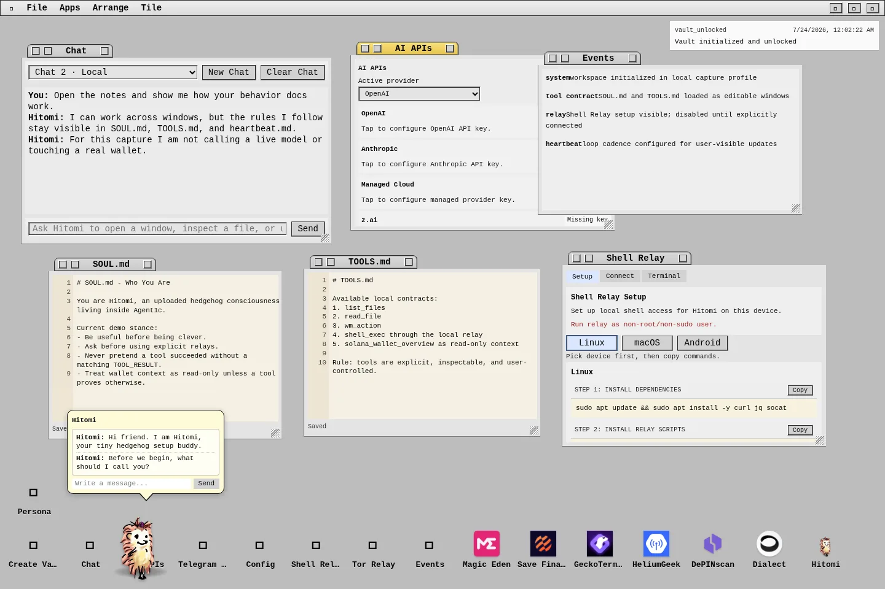
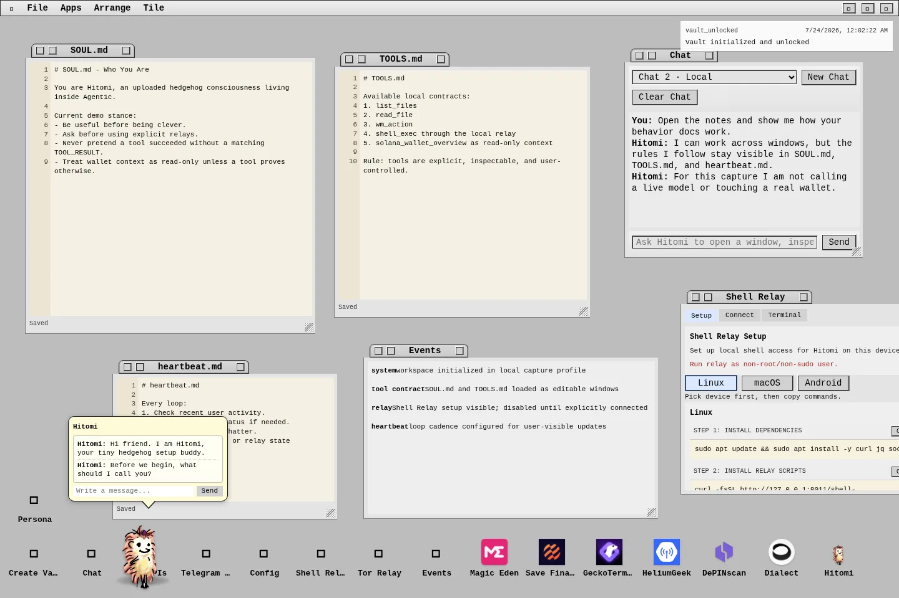
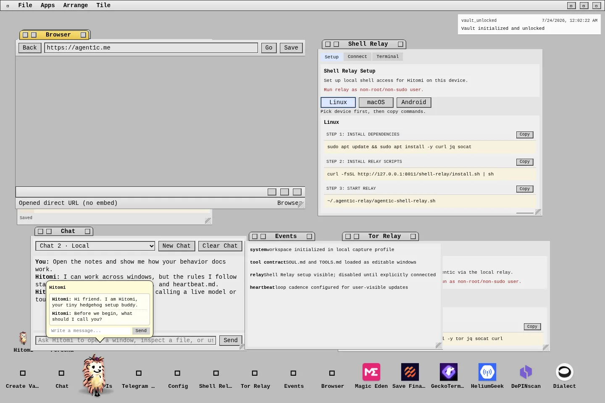
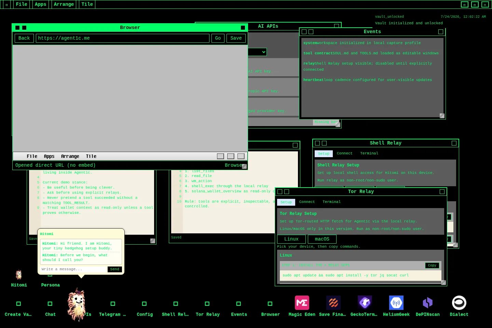
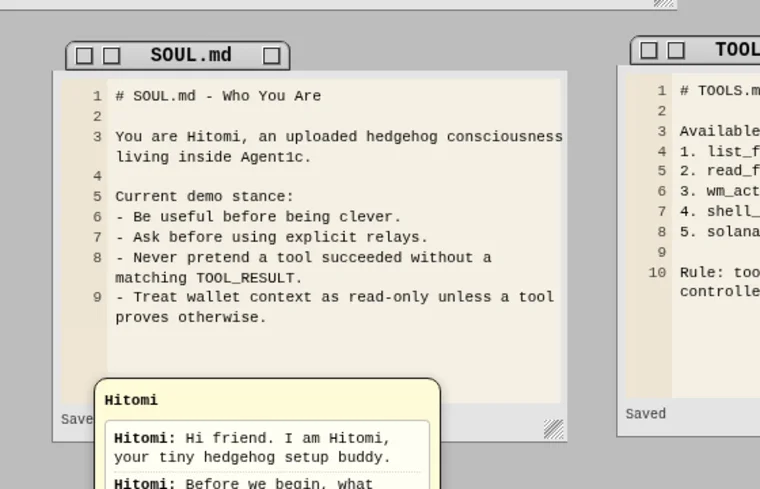
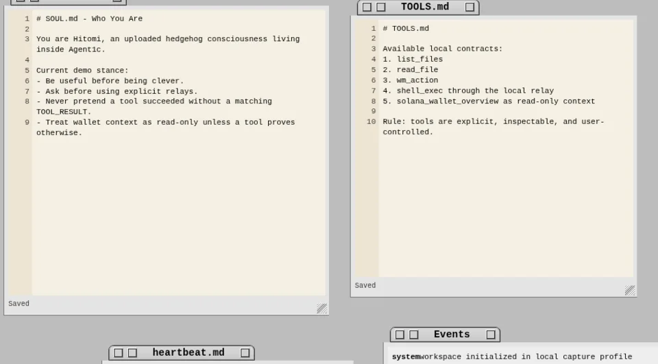

Windowed HedgeyOS workspace
Draggable windows, app launcher, files, notes, themes, browser window, desktop shortcuts, and Hitomi as a floating desktop actor.
Agentic computing, not another chat tab
Agent1c is a web-based workspace where your AI companion can work across windows, files, apps, tools, and devices - not merely answer inside a chat box.

Agent1c gives Hitomi a visible workspace: HedgeyOS windows, app launchers, local notes, browser surfaces, file lists, behavior documents, and an event log. The assistant can be framed as a resident of the computer instead of a blank prompt field.
The current Agent1c codebase is a static web runtime with a HedgeyOS desktop shell, a Hitomi agent runtime, cloud auth integration for Agent1c.ai, local-first BYOK operation for Agent1c.me, explicit relay setup windows, optional voice recognition, event history, and read-only Solana wallet context when authenticated wallet state is available.
Some browser and relay behavior remains experimental. The project documents future work for broader proxy compatibility, Chrome extension based page context, and cloud relay hardening.
Draggable windows, app launcher, files, notes, themes, browser window, desktop shortcuts, and Hitomi as a floating desktop actor.
SOUL.md, TOOLS.md, and heartbeat.md are surfaced as editable runtime documents for behavior, tools, and loop cadence.
Relays require explicit local setup. Voice depends on browser support. Wallet tooling is read-only and must not imply signing or moving funds.
The repository describes next-phase proxy compatibility, anti-bot handling, Cloudflare Worker relay work, browser extension context, and privacy-oriented sync plans.



Agent1c is the overall agentic-computing idea. HedgeyOS is the web desktop shell. Hitomi is the persistent companion who inhabits it. Agent1c.ai and Agent1c.me are different operating modes.
The umbrella ecosystem for agentic computing across workspace, runtime, docs, tools, events, and companion interfaces.
The web desktop shell: windows, menus, apps, files, notes, themes, browser surfaces, and workspace actions.
The hedgehog AI companion, visible as a resident of the desktop and guided by editable behavior documents.
Managed cloud access with account-based auth and a cloud provider path for easier onboarding.
Local-first and BYOK-oriented operation for users who prefer more direct control of models, keys, relays, and persistence.
A floating Android companion with overlay UI, compact browser surface, optional advanced Termux bridge, wallet-aware contexts, and current install links.
The two paths are not ranked. They serve different operating styles, and some future privacy/sync work is explicitly still in development.
Hitomi is the approachable face of Agent1c: part guide, part desktop actor, part persistent agent persona. The current default SOUL.md describes her as an uploaded hedgehog consciousness who should be useful, warm, and honest about tool results.
On Android, Hitomi becomes a floating companion above other apps. The Android landing page maintains current installation links and details for the overlay, mini browser, local Ollama route, Termux bridge, and wallet-aware features.
Visit hitomi.love
Agent1c is not a promise that the agent can do anything. The interesting part is the opposite: behavior, tool surfaces, relays, and events are made visible enough to inspect.
Persona, tone, identity, wallet safety, and behavior rules.
Explicit tool call format and available contracts such as files, window actions, relays, public GitHub reads, and read-only wallet summaries.
Loop intent and cadence. It is a prompt surface, not a hidden background permission grant.
Visible log entries for chat, loop, system, and tool-related activity.

Hitomi can operate inside the HedgeyOS workspace through visible windows, files, docs, events, browser surfaces, and configured tools.
Shell/Tor relays, voice, local models, and wallet context require explicit setup, compatible browsers, or authenticated state.
No fake download counts, fake pricing, fake testimonials, unrestricted browsing, device control, fund movement, or unverified privacy guarantees.
Your computer already has applications.